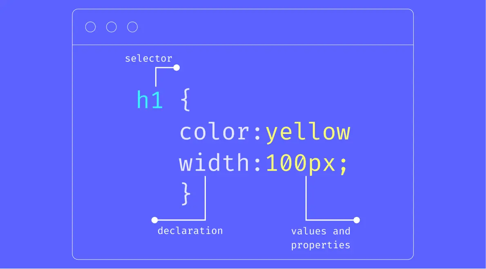

CSS selectors define which HTML elements should be styled. They range from simple element selectors like "p" for paragraphs to complex patterns matching specific attributes or states. Mastering selectors is key to applying styles precisely where needed without unnecessary code duplication.

Common CSS selector types and their syntax